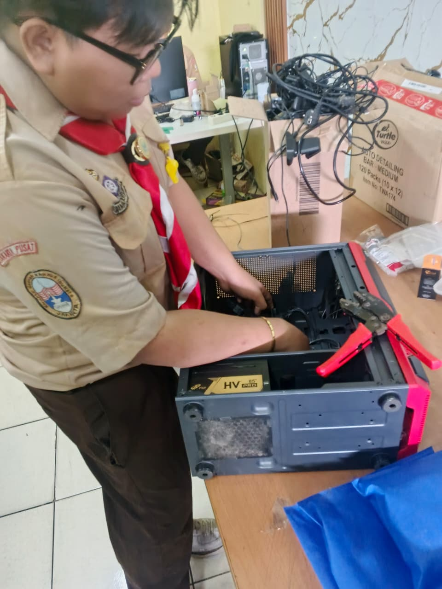

Teknik Komputer & Jaringan | Network Engineer
Saya adalah seorang teknisi Teknik Komputer dan Jaringan yang memiliki pengalaman dalam instalasi jaringan, konfigurasi Mikrotik, server, dan pengembangan sistem jaringan sekolah.

Menerima, memeriksa dan menyelesaikan setiap perkara di tingkat banding yang diajukan kepadanya serta tugas lain yang ditentukan oleh Undang-Undang.
Instalasi LAN dan konfigurasi internet sekolah.
Mengikuti pelatihan keterampilan Tata Boga di PPKD MTU yang meliputi pengolahan makanan, manajemen dapur, kebersihan makanan (food hygiene), serta kerja tim dalam lingkungan produksi kuliner
Email: Dimasvernandes3@gmail.com
WhatsApp: 085187077262
Website: www.zyens-tkj.com